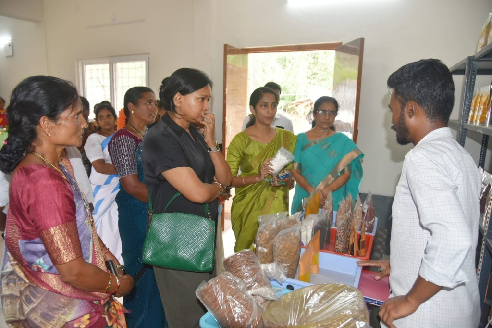

Horticulture
Horticultural plantation crops and nursery support for tribal cultivators in the Paderu Agency


Horticulture & Plantation Crops
Purpose: Diversifying income sources through high-value horticultural plantation crops.
Services: Pepper, turmeric, ginger, pineapple, and fruit orchard nursery distribution.
Beneficiaries: Small and marginal tribal cultivators in Agency area.
Where to Approach: Horticulture Officer, ITDA Paderu.
Nursery & Plantation Support
ITDA Paderu coordinates horticulture support with farmer assistance through the Horticulture Officer at the ITDA Office, Paderu, and local Rythu Bharosa Kendra (RBK) where applicable.
Related department
Coffee cultivation, seeds supply and organic farming guidance are listed under Agriculture.
Officer names, subsidy amounts and scheme eligibility should be confirmed at the Horticulture wing, ITDA Paderu.